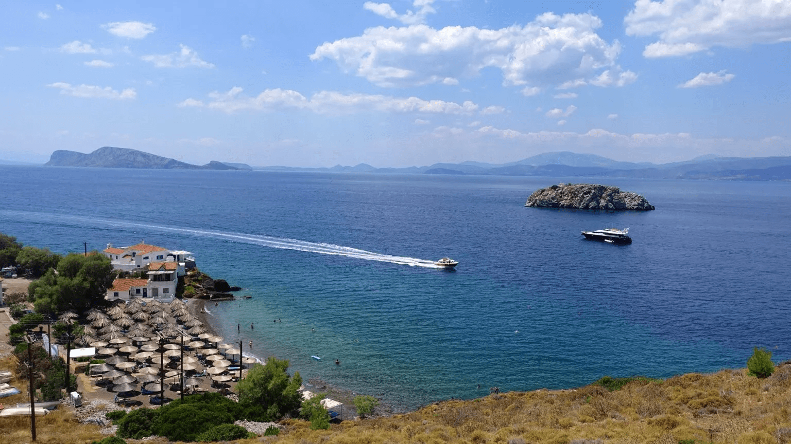

Let's Budget Your trip to Hydra!
When traveling to Hydra, Greece, we understanding traveling to different countires can get pricey. In order to help you with your budget, we have created a part of our website to help you find hotels, flights, and activities to fit your personal budget!
Finding a perfect hotel
One of the most important things about your trip will be where you deicde to stay. Hotels can vary in price dependent on many factors like location, number of people, included amenities. Click the hyperlink below to find hotels in Hydra that appeal to your interests. This website factors your budget, style of hotel, and other needs you might consider when picking a hotel.
FIND HOTELS IN HYDRA HERE!
Booking a flight to Hydra
Finding cheap and affordable flights is one of the most challenging aspects for travelers. The price of flying seems to be going up every year. To assist with budgeting for your flight to Hydra, here are some tips for when it's time to find your flight:
- Go to Hydra during the months where the tourists ratio is low. If you want to travel to Hydra in the summer, we suggest going in early May, or late August to avoid the crowds
- Take a redeye! We know getting up at the crack of dawn or staying up very late is hard for some travlers. One benefit of taking a redeye is that it prepares travlers for jetlag. The prices also are lowered for red-eye flights because the population of flyers is less dense during these hours
- Don't fly first class, the regular cabin is just fine. Most flights overseas have comfortable seating in the main cabin and have snack and beverage at your exposure. They also offer WIFI for a small fee if you are interested. Don't break the bank on your flight!
Keep in mind budgeting for the ferry.There are no direct flights from The United States to Hydra! You have to fly to Athens, Greece. From Athens, you can take a ferry to Hydra, costing between 38 to 50 Euros for a one-way ferry trip.
ClICK HERE TO FIND LOW COST FLIGHTS!

Cheap Activities in Hydra
Having fun things to do in Hydra doesn't have to empty your wallet. Because Hydra isn't one of the most popular Greek islands, prices for activities are not as expensive as their brother and sister islands. Hydra has also banned cars, meaning you won't spend a fortune on taxis. We have come up with the most fun and unique activities to do during your stay that are budget friendly for new travelers:
- Climb Mount Eros - Free and exciting for young backpackers that would love a day trip up the historical and beautiful Mount Eroes

- Visit the Museum of Hydra of Historical Archives - For only 5 Euroes, you can dive deep into the history of Hydra and browse cool archieves from ancient history
- Go horseback riding throughout the town - Locals charge 30 euros to secure a fuzzy and friendly horse that will take you on a tour of streets of Hydra. An additional charge might be added if your tour goes over thirty minutes, charging you 12 euros for every half-hour added.
- Visit Vlychos beach - Take a water taxi (approx. for 30 euros round trip) to this secluded paradise. The beach itself is completely free where you can take a dip in the crystal clear water, or relax to sounds of the waves

There is really something for everyone in Hydra, Greece! Visit this location on YOUR TERMS! This budget-friendly, exotic getaway is calling your name, what are you waiting for?
Click the image below for Hydra's Official website to start planning your trip today!

CLICK HERE TO RETURN TO PAGE 1!